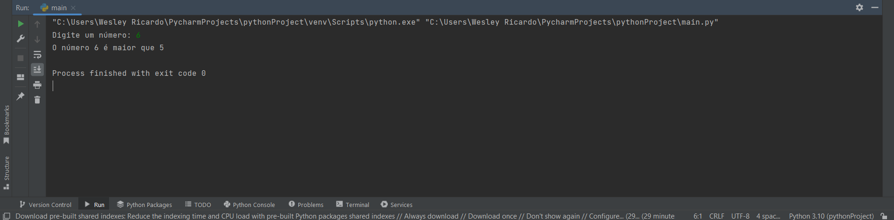

Operadores
Operadores comparativos
Mais uma vez seja bem vindo jovem etecano, para mais um pequeno estudo em sua linguagem para ser um desenvolvedor python, aqui vamos aprender mais sobre os operadores, e nesse artigo específicamente vamos aprender sobre os operadores de comparação.
Os operadores de comparação como o próprio nome já diz comparam dois operandos, retornando um valor boleano verdadeiro (True) ou falso (false) dependendo da confição. A seguir podemos na tabela podemos ver exemplos para entendermos melhor.| Operador | Conceito | Exemplo | valor |
|---|---|---|---|
| > (Maior que) | Verifica se um valor é maior que o outro | 6>5 | Verdadeiro (True) |
| < (Menor que) | Verifica se um valor é menor que o outro | 6<5 | falso (False) |
| == (Igual a) | Compara se um valor é igual ao outro | 6==6 | falso (False) |
| != (Diferente de) | Compara se um valor é diferente do outro | 6!=5 | Verdadeiro (True) |
| > (Maior ou igual a) | Verifica se um valor é maior ou igual a o outro valor | 6>=5 | Verdadeiro (True) |
| <= (Menor ou igual a) | Verifica se um valor é menor ou igual a outro valor | 6<=5 | falso (False) |
Podemos usar esses operadores para tomar decisões, por exemplo podemos usar o if (que você vai aprender mais para frente) então temos se o número X for maior que o número 5 e se não (else )o código irá printar é maior que o 5, podemos entender melhor no exemplo abaixo:
variavel = int(input("Digite um número: "))
if variavel > 5:
print( f"O número {variavel} é maior que 5" )
else:
print( f"O número não é maior que 5" )
Resultado
No código acima temos o int e o input como novos comandos, o int diz que a variável é um número do tipo inteiro, ou seja não tem vírgulas, o comando input que traduzindo significa algo como entrada, é usado para que o usuário interaja no terminal, no caso digitando o número desejado, depois disso o programa calcula com o if e os operadores de comparação se o número é maior que 5 ou não, se for maior o código retornará um valor verdadeiro e entrará no if, se não ignorará o if e irá para o else.
outros exemplos:
var = 5
if var == 5:
print( f"O valor {var} é igual a 5" )
if var != 7:
print( f"O valor {var} é diferent de 7" )
if var > 2:
print( f"O valor {var} é maior que 2" )
if var >= 5:
print( f"O valor {var} é maior ou igual a 5" )
if var < 7:
print( f"O valor {var} é menor que 7" )
if var <= 5:
print( f"O valor {var} é menor ou igual a 5" )